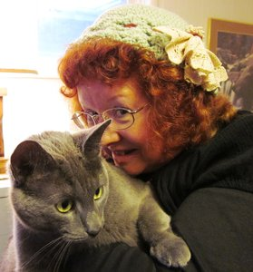

Shelley Adina
 RITA Award® winning author and Christy finalist Shelley Adina wrote her first novel when she was 13. It was rejected by the literary publisher to whom she sent it, but he did say she knew how to tell a story. That was enough to keep her going through the rest of her adolescence, a career, a move to another country, a B.A. in Literature, an M.F.A. in Writing Popular Fiction, and countless manuscript pages. She is the author of more than 30 novels and now teaches in the M.F.A. program as adjunct faculty. Shelley is a world traveler who loves to imagine what might have been. Between books, she loves playing the piano and Celtic harp, making period costumes, and spoiling her flock of rescued chickens.
RITA Award® winning author and Christy finalist Shelley Adina wrote her first novel when she was 13. It was rejected by the literary publisher to whom she sent it, but he did say she knew how to tell a story. That was enough to keep her going through the rest of her adolescence, a career, a move to another country, a B.A. in Literature, an M.F.A. in Writing Popular Fiction, and countless manuscript pages. She is the author of more than 30 novels and now teaches in the M.F.A. program as adjunct faculty. Shelley is a world traveler who loves to imagine what might have been. Between books, she loves playing the piano and Celtic harp, making period costumes, and spoiling her flock of rescued chickens.
Elizabeth Bear
 Elizabeth Bear was born on the same day as Frodo and Bilbo Baggins, but in a different year.When coupled with a childhood tendency to read the dictionary for fun, this led her inevitably to penury, intransigence, and the writing of speculative fiction. She is the Hugo, Sturgeon, Locus, and Campbell Award winning author of 27 novels (The most recent is Karen Memory, a Weird West adventure from Tor) and over a hundred short stories. Her dog lives in Massachusetts; her partner, writer Scott Lynch, lives in Wisconsin. She spends a lot of time on planes.
Elizabeth Bear was born on the same day as Frodo and Bilbo Baggins, but in a different year.When coupled with a childhood tendency to read the dictionary for fun, this led her inevitably to penury, intransigence, and the writing of speculative fiction. She is the Hugo, Sturgeon, Locus, and Campbell Award winning author of 27 novels (The most recent is Karen Memory, a Weird West adventure from Tor) and over a hundred short stories. Her dog lives in Massachusetts; her partner, writer Scott Lynch, lives in Wisconsin. She spends a lot of time on planes.
Alan Brooks
 Raised in the murky depths of the mystical city of Atlanta, Alan Brooks has been reading comics since the age of 5. He attended his first con at age 11, and in his teen years, he erroneously thought he’d outgrown comics, but then he realized, it was just the 90s.
Raised in the murky depths of the mystical city of Atlanta, Alan Brooks has been reading comics since the age of 5. He attended his first con at age 11, and in his teen years, he erroneously thought he’d outgrown comics, but then he realized, it was just the 90s.
In 2003, he moved to Denver, and became a part of the music and comic creators’ communities. His latest project, a book called Spotless, is a supernatural drama involving the children of fallen angels.
Vivian Caethe
 When not fighting crime, Vivian Caethe writes weird fiction, science fiction, fantasy, and everything in between. She has an MFA in Creative Writing from Regis University and is a member of the Editorial Freelancer’s Association. She also drinks copious amounts of tea. While doing all these things, she lives in Colorado with her husband, their dog who thinks he’s a werehuman, and a super genius cat. She can be found at http://www.viviancaethe.com/.
When not fighting crime, Vivian Caethe writes weird fiction, science fiction, fantasy, and everything in between. She has an MFA in Creative Writing from Regis University and is a member of the Editorial Freelancer’s Association. She also drinks copious amounts of tea. While doing all these things, she lives in Colorado with her husband, their dog who thinks he’s a werehuman, and a super genius cat. She can be found at http://www.viviancaethe.com/.
Roberto Calas
 Roberto Calas is an author and lover of history. His serial trilogy (The Scourge) is about a 14th century knight fighting his way through a demon-infested England to reunite with the woman he loves. And every bit of it is true except for the made up parts.
Roberto Calas is an author and lover of history. His serial trilogy (The Scourge) is about a 14th century knight fighting his way through a demon-infested England to reunite with the woman he loves. And every bit of it is true except for the made up parts.
In addition to The Scourge series, Roberto has written The Beast of Maug Maurai (fantasy), and Kingdom of Glass (historical fiction in the Foreworld universe). He lives in Sandy Hook, Connecticut with his two children, and visits the United Kingdom on a monthly basis to be with his fiancée, Annabelle. Sometimes he fights demons to reach her.
You can learn more about Roberto on his website: robertocalas.com.
He’d be most appreciative if you liked his facebook page, too: https://www.facebook.com/RobertoCalasAuthor.
And if you feel you can only take 140 characters worth of him at a time, his twitter handle is, @robertocalas.
Veronica R. Calisto
 Veronica R. Calisto spends her days massaging data, her weekends massaging people, her evenings teaching people how to massage other people, and the spaces in between elbowing the images and voices in her head into submission. All of this set to music that often spills out in spontaneous song and dance numbers.
Veronica R. Calisto spends her days massaging data, her weekends massaging people, her evenings teaching people how to massage other people, and the spaces in between elbowing the images and voices in her head into submission. All of this set to music that often spills out in spontaneous song and dance numbers.
If you see a walking musical number shimmying down the street, it’s probably her. And, if you’re looking for a nerdy good time, you should probably follow her.
J. A. Campbell
 Julie lives in Colorado with three cats, two border collies, her horse, and her Irish Sailor. She is the author of many Vampire and Ghost-Hunting Dog stories, the Clanless series, and the young adult fantasy series Tales of the Travelers. She’s a member of the Horror Writers Association and the Dog Writers of America Association and the editor for Story Emporium fiction magazine. To find a complete list of her novels, go to her website http://www.writerjacampbell.com/.
Julie lives in Colorado with three cats, two border collies, her horse, and her Irish Sailor. She is the author of many Vampire and Ghost-Hunting Dog stories, the Clanless series, and the young adult fantasy series Tales of the Travelers. She’s a member of the Horror Writers Association and the Dog Writers of America Association and the editor for Story Emporium fiction magazine. To find a complete list of her novels, go to her website http://www.writerjacampbell.com/.
W. J. Cherf
 W. J. Cherf is a witty and engaging author, ancient historian, and archaeologist, who has been there and dug that. He writes historical science fiction for those looking for a wild and sophisticated ride, who enjoy lively description, and an involved plot. His award-winning series, The Manuscripts of the Richards’ Trust, fulfill a life-long desire: “to write books without footnotes,” and to share his love for ancient Egypt. His message is: “When it comes to history, there is always more ‘out there’ than meets the eye. You just have to be aware of the evidence and sensitive to the possibilities.” He is currently delving into the deep and murky realms of the paranormal, action-adventure, and urban fantasy genres. To find reviews and free chapters to all of his published works, not to mention a handy source for the latest breaking news in Egyptology, go to http://www.wjcherf.com/.
W. J. Cherf is a witty and engaging author, ancient historian, and archaeologist, who has been there and dug that. He writes historical science fiction for those looking for a wild and sophisticated ride, who enjoy lively description, and an involved plot. His award-winning series, The Manuscripts of the Richards’ Trust, fulfill a life-long desire: “to write books without footnotes,” and to share his love for ancient Egypt. His message is: “When it comes to history, there is always more ‘out there’ than meets the eye. You just have to be aware of the evidence and sensitive to the possibilities.” He is currently delving into the deep and murky realms of the paranormal, action-adventure, and urban fantasy genres. To find reviews and free chapters to all of his published works, not to mention a handy source for the latest breaking news in Egyptology, go to http://www.wjcherf.com/.
Milton Davis
 Milton Davis is a research and development chemist, speculative fiction writer and owner of MVmedia, LLC, a micro publishing company specializing in Science Fiction, Fantasy and Sword and Soul. MVmedia’s mission is to provide speculative fiction books that represent people of color in a positive manner. Milton is the author of Changa’s Safari Volumes One, Two and Three. His most recent releases are Woman of the Woods and Amber and the Hidden City. He is co-editor of four anthologies; Griots: A Sword and Soul Anthology and Griot: Sisters of the Spear, with Charles R. Saunders; The Ki Khanga Anthology with Balogun Ojetade and the Steamfunk! Anthology, also with Balogun Ojetade. Milton Davis and Balogun Ojetade recently received the Best Screenplay Award for 2014 from the Urban Action Showcase for their African martial arts script, Ngolo. His current projects include The City, a cyberfunk anthology, Dark Universe, a space opera anthology based on a galactic empire ruled by people of African American descent, and From Here to Timbuktu, a steamfunk novel.
Milton Davis is a research and development chemist, speculative fiction writer and owner of MVmedia, LLC, a micro publishing company specializing in Science Fiction, Fantasy and Sword and Soul. MVmedia’s mission is to provide speculative fiction books that represent people of color in a positive manner. Milton is the author of Changa’s Safari Volumes One, Two and Three. His most recent releases are Woman of the Woods and Amber and the Hidden City. He is co-editor of four anthologies; Griots: A Sword and Soul Anthology and Griot: Sisters of the Spear, with Charles R. Saunders; The Ki Khanga Anthology with Balogun Ojetade and the Steamfunk! Anthology, also with Balogun Ojetade. Milton Davis and Balogun Ojetade recently received the Best Screenplay Award for 2014 from the Urban Action Showcase for their African martial arts script, Ngolo. His current projects include The City, a cyberfunk anthology, Dark Universe, a space opera anthology based on a galactic empire ruled by people of African American descent, and From Here to Timbuktu, a steamfunk novel.
Milton resides in Metro Atlanta with his wife Vickie and his children Brandon and Alana.
Delilah S. Dawson
 Delilah S. Dawson is the author of Servants of the Storm, Hit, and the Steampunk Fantasy Blud series, including Wicked as They Come, Wicked After Midnight, Wicked Ever After, and Wicked as She Wants, winner of the Steampunk Book of the Year and May Seal of Excellence for 2013 from RT Book Reviews. She’s also the author of several e-novellas and comics, as well as The Lumberfox and The Superfox as Ava Lovelace and Wake of Vultures as Lila Bowen. She’s into horses, books, geekery, and cupcakes and lives in the mountains of Georgia with her family. Find her online at www.whimsydark.com.
Delilah S. Dawson is the author of Servants of the Storm, Hit, and the Steampunk Fantasy Blud series, including Wicked as They Come, Wicked After Midnight, Wicked Ever After, and Wicked as She Wants, winner of the Steampunk Book of the Year and May Seal of Excellence for 2013 from RT Book Reviews. She’s also the author of several e-novellas and comics, as well as The Lumberfox and The Superfox as Ava Lovelace and Wake of Vultures as Lila Bowen. She’s into horses, books, geekery, and cupcakes and lives in the mountains of Georgia with her family. Find her online at www.whimsydark.com.
Evangeline Denmark
Evangeline Denmark cannot sing. The tragic discovery of this truth led to bouts of angst-ridden poetry writing in her teens, several ill-advised relationships with literary characters, and the compulsive creation of her own fictional worlds. Having found her true voice, Evangeline now writes fiction with hints of whimsy, glimmers of fantasy, and strokes of the supernatural.
Her debut novel, Curio, a young adult steampunk fantasy, releases January 2016. She has also co-authored two children’s books, The Dragon and the Turtle and The Dragon and the Turtle Go on Safari (Waterbrook Press.)
Evangeline lives in Colorado in a house stuffed full of animals and creative people that would surely go to ruin were it not for the watchful eye of a cattle dog named Willie. Find Evangeline online at http://www.evangelinedenmark.com/.
Betsy Dornbusch
 Betsy Dornbusch is an epic fantasy writer from Colorado. Her sixth book, the last of The Books of the Seven Eyes trilogy, will be released in English speaking territories in 2016 with a German release following. Her short fiction has appeared in print and online magazines, as well as several anthologies including UF Manifesto, Neverland’s Library, and Blood Business. She regularly speaks at fan conventions and writers’ conferences, and she’s the sole proprietor of Sex Scenes at Starbucks where you can believe most of what she writes. In her free time, she herds her teenagers (like cats, only they talk back), snowboards, air jams at punk rock concerts, and follows Denver sports teams.
Betsy Dornbusch is an epic fantasy writer from Colorado. Her sixth book, the last of The Books of the Seven Eyes trilogy, will be released in English speaking territories in 2016 with a German release following. Her short fiction has appeared in print and online magazines, as well as several anthologies including UF Manifesto, Neverland’s Library, and Blood Business. She regularly speaks at fan conventions and writers’ conferences, and she’s the sole proprietor of Sex Scenes at Starbucks where you can believe most of what she writes. In her free time, she herds her teenagers (like cats, only they talk back), snowboards, air jams at punk rock concerts, and follows Denver sports teams.
Steven Dunn
 Steven Dunn was born and raised in West Virginia, and after 10 years in the Navy he attended University of Denver and received his B.A. in Creative Writing. He is the Reviews and Interviews Editor for Horse Less Press. And his first novel, Potted Meat, is forthcoming from Tarpaulin Sky Press in March 2016.
Steven Dunn was born and raised in West Virginia, and after 10 years in the Navy he attended University of Denver and received his B.A. in Creative Writing. He is the Reviews and Interviews Editor for Horse Less Press. And his first novel, Potted Meat, is forthcoming from Tarpaulin Sky Press in March 2016.
Jaymee Goh
 Jaymee Goh is a steampunk postcolonialist, hailing from the Nusantaran country Malaysia and currently residing in North America as a PhD Candidate at the University of California, Riverside. Her creative works have appeared in Expanded Horizons, Stone Telling, and Crossed Genres, and lately in Steampunk World. She is an editor of The Sea is Ours: Tales of Steampunk Southeast Asia (forthcoming Fall 2015, Rosarium Publishing). She has written on racialized and postcolonial steampunk for the WisCon Chronicles (Aqueduct Press, 2011 & 2012), co-written an essay on steampunk fashion and race for Fashion Talks (SUNY Press, 2012), and contributed to Tor.com, Racialicious.com, the Apex Book Company Blog, Beyond Victoriana.com, and Steampunk III: Revolution (Tachyon Publications, 2012). She writes about anti-racism, non-Eurocentric steampunk and postcolonialism at her blog Silver Goggles.
Jaymee Goh is a steampunk postcolonialist, hailing from the Nusantaran country Malaysia and currently residing in North America as a PhD Candidate at the University of California, Riverside. Her creative works have appeared in Expanded Horizons, Stone Telling, and Crossed Genres, and lately in Steampunk World. She is an editor of The Sea is Ours: Tales of Steampunk Southeast Asia (forthcoming Fall 2015, Rosarium Publishing). She has written on racialized and postcolonial steampunk for the WisCon Chronicles (Aqueduct Press, 2011 & 2012), co-written an essay on steampunk fashion and race for Fashion Talks (SUNY Press, 2012), and contributed to Tor.com, Racialicious.com, the Apex Book Company Blog, Beyond Victoriana.com, and Steampunk III: Revolution (Tachyon Publications, 2012). She writes about anti-racism, non-Eurocentric steampunk and postcolonialism at her blog Silver Goggles.
L. J. Hachmeister
 Author L.J. Hachmeister writes, fights, and draws. Though she has invested the last few years penning the science fiction/fantasy series Triorion, L.J. still enjoys teaching Doce Pares Eskrima and illustrating her upcoming trilogy, Hearts in Dreams.
Author L.J. Hachmeister writes, fights, and draws. Though she has invested the last few years penning the science fiction/fantasy series Triorion, L.J. still enjoys teaching Doce Pares Eskrima and illustrating her upcoming trilogy, Hearts in Dreams.
L.J.’s current series, Triorion, takes readers across the galaxy with the telepathic triplets Jetta, Jaeia and Jahx. Only five-years-old, the siblings must learn how to survive amongst adults who wish to exploit their incredible gifts. However, when the tide of war changes, the siblings find their persecutors at their mercy and a new and more powerful enemy at their door, eager to harness their talents for intergalactic genocide.
The Triorion series features illustrations by artists Melissa Erickson, Jacob Mathews, Jeremy Aaron Moore, and Michael Webber.
For more information, please go to http://www.triorion.com/.
Kevin Hearne
 Kevin Hearne is the author of the Iron Druid Chronicles and the forthcoming Seven Kennings trilogy. He escaped Arizona last year and now lives happily ever after in Colorado with his family and doggies. He digs comics, hugs trees, and knows how to make some pretty great microwave nachos.
Kevin Hearne is the author of the Iron Druid Chronicles and the forthcoming Seven Kennings trilogy. He escaped Arizona last year and now lives happily ever after in Colorado with his family and doggies. He digs comics, hugs trees, and knows how to make some pretty great microwave nachos.
Kristi Helvig
Kristi Helvig is a Ph.D. clinical psychologist turned sci-fi/fantasy author. Her first novel, BURN OUT (Egmont USA/Lerner Publishing), which Kirkus Reviews called “a scorching series opener not to be missed,” follows 17-year-old Tora Reynolds, one of Earth’s last survivors, when our sun burns out early. In the sequel, STRANGE SKIES, out 4/28/2015, Tora makes it to a new planet only to discover a whole new host of problems—and the same people who still want her dead. Order Kristi’s books through Amazon, Barnes and Noble, or your favorite local retailer. Kristi muses about Star Trek, space monkeys, and other assorted topics on her blog at www.kristihelvig.com and Twitter (@KristiHelvig). You can also find her on Facebook. Kristi resides in sunny Colorado with her hubby, two kiddos, and behaviorally-challenged dogs.
Lori Holuta
Lori Alden Holuta lives between the cornfields of Mid-Michigan, where she grows vegetables and herbs, when she’s not playing games with a cat named Chives. She’s fond of activities from the past, including canning and preserving, crochet and cooking. She’s learning how to make her own wines and cheeses.
Her lifelong fascination with the Victorian era dovetails nicely with articles she has written for The Primgraph, a magazine which focused on historical eras in virtual worlds, as well as movie and book reviews for Steampunk Magazine. The Flight to Brassbright is her first novel, and is set in a quasi-Victorian era. She also serves as Editor-In-Chief for Penny Gaff Publications, a small independent publishing house which produces serial adventures in the old penny novel style.
Follow the Brassbright Chronicles at http://www.brassbrightcity.com
Amalie Howard
AMALIE HOWARD grew up on a small Caribbean island where she most of her childhood with her nose buried in a book or being a tomboy running around barefoot, shimmying up mango trees and dreaming of adventure. 22 countries, surfing with sharks and several tattoos later, she has traded in bungee jumping in China for writing the adventures she imagines instead. She isn’t entirely convinced which takes more guts.
She is the award-winning IndieNext author of Alpha Goddess, The Aquarathi series, The Riven Chronicles series, and the Cruentus Curse series. Her novels have been critically acclaimed by Kirkus, PW, VOYA, and Booklist, and her debut novel, Bloodspell, was a #1 Amazon bestseller and a Seventeen Magazine Summer Read. She currently resides in Colorado with her husband and three children. Visit her at www.amaliehoward.com.
Emmy Jackson
 Emmy Jackson is a Detroit-based author who is two books into a post-apocalyptic urban fantasy series called Empty Cradle. He has been a freelance automotive writer for fourteen years, a fiction writer for thirty, and has a broad range of experience and expertise with which to contribute to panel discussions.
Emmy Jackson is a Detroit-based author who is two books into a post-apocalyptic urban fantasy series called Empty Cradle. He has been a freelance automotive writer for fourteen years, a fiction writer for thirty, and has a broad range of experience and expertise with which to contribute to panel discussions.
Emmy drove a school bus for six years, has an encyclopedic knowledge of cars (useful when dealing with technical issues in post-apoc and steampunk stories), and has some experience in aerial acrobatics, improvisational dance, gaming, travel…lots of random things.
Emmy spent three years living full-time in a motorhome as a nomad and is best pigeonholed as an occasionally cross-dressing post-apocalyptic gothic dieselpunk with distinct steampunk and maker tendencies.
Carolyn Kay
 Carolyn Kay enjoys writing about an eclectic variety of things, and imagining what normally inanimate things would do if given life. She is currently collaborating with award-winning illustrator, Chaz Kemp, on the World of Ashelon, a series of novellas set in a steampunk fantasy world. When she’s not writing, she can be seen dancing with Batavia, a tribal fusion belly dance troupe, or donning her lightsaber in defense of the Dark Empire. You can see her other works at http://www.bewitchinghips.com/.
Carolyn Kay enjoys writing about an eclectic variety of things, and imagining what normally inanimate things would do if given life. She is currently collaborating with award-winning illustrator, Chaz Kemp, on the World of Ashelon, a series of novellas set in a steampunk fantasy world. When she’s not writing, she can be seen dancing with Batavia, a tribal fusion belly dance troupe, or donning her lightsaber in defense of the Dark Empire. You can see her other works at http://www.bewitchinghips.com/.
A. L. Kessler
 A.L. Kessler is the author of Dark War Chronicles and Here Witchy Witchy. She dabbles in paranormal romance, steampunk and urban fantasy. Since she was a teenager she’s loved weaving stories and spinning tales. When she’s not at the beck-and-call of the Lord and Lady of the House, two black cats by the names of Jynx and Sophie, training a playful puppy named Zelda, playing with her daughter, or killing creepers and mining all the things with her husband of 4 years, she’s either reading, participating in NaNoWriMo, or writing in her Blog Writing Rambles. For those who like things on the more spicy side, she leads a double life as Alexandra Webb. Learn more at http://www.amylkessler.com/
A.L. Kessler is the author of Dark War Chronicles and Here Witchy Witchy. She dabbles in paranormal romance, steampunk and urban fantasy. Since she was a teenager she’s loved weaving stories and spinning tales. When she’s not at the beck-and-call of the Lord and Lady of the House, two black cats by the names of Jynx and Sophie, training a playful puppy named Zelda, playing with her daughter, or killing creepers and mining all the things with her husband of 4 years, she’s either reading, participating in NaNoWriMo, or writing in her Blog Writing Rambles. For those who like things on the more spicy side, she leads a double life as Alexandra Webb. Learn more at http://www.amylkessler.com/
Terry Kroenung
 After having been an Army infantry officer leaping out of perfectly-functioning aircraft, a teacher of Crips & Bloods on a wagon train, and Chuck E. Cheese (really), adding ‘author’ to the list is almost anti-climactic.
After having been an Army infantry officer leaping out of perfectly-functioning aircraft, a teacher of Crips & Bloods on a wagon train, and Chuck E. Cheese (really), adding ‘author’ to the list is almost anti-climactic.
Brimstone and Lily, Jasper’s Foul Tongue, and Jasper’s Magick Corset are the first 3 books in his Legacy Stone series. They are snarky takes on traditional quest-lit. They include shape-shifting swords, drunken fire sprites riding magic cannonballs, combat pelicans, Captain Nemo’s sub, swimming trees, Viking zombies, lady ninjas, and poop monsters. Brimstone and Lily won the Bronze Medal in Sci-Fi/Fantasy at the 2010 Independent Publishers Book Awards.
Paragon of the Eccentric, a Steampunk prequel to War of the Worlds, won the 2013 Colorado Gold writing contest in September, as well as the 2012 Incite Denver contest. A teacher of Bartitsu, he demonstrates Sherlock Holmes’ martial art (an actual Victorian discipline) anywhere they’ll have him.
Paul Lell
 Paul Lell was born and raised in and around Denver, Colorado, Paul has been telling stories (some true, some not so much) for most of his life. This trait led to an early adoption of role playing games and a life-long love of the written word. An abrupt change of career in 2007 gave him the opportunity to publish his first novel, and he’s been at it ever since; trying to outdo himself with each new book.
Paul Lell was born and raised in and around Denver, Colorado, Paul has been telling stories (some true, some not so much) for most of his life. This trait led to an early adoption of role playing games and a life-long love of the written word. An abrupt change of career in 2007 gave him the opportunity to publish his first novel, and he’s been at it ever since; trying to outdo himself with each new book.
Currently residing in Westminster, Colorado (he never did make it far from where he began), with his family; a wife, two sons, a giant dog, and two giant cats, he writes daily, reads everything he can, and works on refining his stories, and games at all hours.
Najah Lightfoot
 Najah Lightfoot is a Priestess of the Goddess and a contributing author for Llewellyn Worldwide Publishing. Her non-fiction articles appear in their Magical Almanac, Witches’ Companion and Spell-A-Day series.
Najah Lightfoot is a Priestess of the Goddess and a contributing author for Llewellyn Worldwide Publishing. Her non-fiction articles appear in their Magical Almanac, Witches’ Companion and Spell-A-Day series.
When she is not busy crafting articles for Llewellyn or pursuing her love of Shao-lin Kung Fu, she is diligently polishing her fictional stories and manuscripts, hoping they will someday find their forever home. She is a member of Rocky Mountain Fiction Writers and lives in Denver, Colorado. You can find her online at https://www.facebook.com/priestessnajah, http://www.craftandconjure.com/, and https://www.twitter.com/Priestess_Najah.
Stant Litore
 An emerging voice in weird fiction, Stant Litore is the author of the series The Zombie Bible, which retells history (and the Bible) as a series of encounters with the restless dead, as well as The Ansible Stories, in which twenty-fifth century Islamic explorers become trapped in alien bodies on alien worlds. Litore has been featured in “The Year’s Best New Sci-Fi” at NPR (March 2014), as an Author Success Story on the Amazon.com homepage (November 2013), and in Weird Fiction Review and SF Signal. Litore recently released Write Characters Your Readers Won’t Forget, a handbook for young writers, and has been featured on the same topic in Jeff Vandermeer’s Wonderbook: The Illustrated Guide to Creating Imaginative Fiction. Asked what he does for a living, Litore says, “I chronicle zombie apocalypses from 3,000 years ago and I build collosseums for tyrannosaurs. Author-fu.”
An emerging voice in weird fiction, Stant Litore is the author of the series The Zombie Bible, which retells history (and the Bible) as a series of encounters with the restless dead, as well as The Ansible Stories, in which twenty-fifth century Islamic explorers become trapped in alien bodies on alien worlds. Litore has been featured in “The Year’s Best New Sci-Fi” at NPR (March 2014), as an Author Success Story on the Amazon.com homepage (November 2013), and in Weird Fiction Review and SF Signal. Litore recently released Write Characters Your Readers Won’t Forget, a handbook for young writers, and has been featured on the same topic in Jeff Vandermeer’s Wonderbook: The Illustrated Guide to Creating Imaginative Fiction. Asked what he does for a living, Litore says, “I chronicle zombie apocalypses from 3,000 years ago and I build collosseums for tyrannosaurs. Author-fu.”
Stant Litore lives in Denver with his wife and two daughters, where he is working on his next novel. More information can be found at http://stantlitore.com/.
Scott Lynch
 Scott Lynch is the author of four novels in the Gentleman Bastard sequence. The Lies of Locke Lamora (2007) was a World Fantasy, British Fantasy, Crawford, Compton Crook, and Locus first novel finalist; its sequels are Red Seas Under Red Skies (2007), the New York Times best-selling The Republic of Thieves (2013), and the forthcoming The Thorn of Emberlain. His short fiction has appeared in Popular Science, Swords and Dark Magic, Tales of the Far West, Fearsome Journeys, and Rogues. He was a Campbell Best New Writer finalist for 2006 and 2007, and won the British Fantasy Award for best newcomer in 2008. He currently lives in Wisconsin, where he has been a volunteer firefighter since 2005. He shares a commuting relationship with his Massachusetts-based partner, author Elizabeth Bear.
Scott Lynch is the author of four novels in the Gentleman Bastard sequence. The Lies of Locke Lamora (2007) was a World Fantasy, British Fantasy, Crawford, Compton Crook, and Locus first novel finalist; its sequels are Red Seas Under Red Skies (2007), the New York Times best-selling The Republic of Thieves (2013), and the forthcoming The Thorn of Emberlain. His short fiction has appeared in Popular Science, Swords and Dark Magic, Tales of the Far West, Fearsome Journeys, and Rogues. He was a Campbell Best New Writer finalist for 2006 and 2007, and won the British Fantasy Award for best newcomer in 2008. He currently lives in Wisconsin, where he has been a volunteer firefighter since 2005. He shares a commuting relationship with his Massachusetts-based partner, author Elizabeth Bear.
Lisa Mantchev
 Lisa Mantchev is the author of young adult steampunk novel TICKER, a Kindle #1 Bestseller now available through Skyscape. She is also the author of the Théâtre Illuminata series, beginning with EYES LIKE STARS, which was nominated for a Mythopoeic Award and the Andre Norton Award. Her near-future YA collaboration SUGAR SKULL and picture books STRICTLY NO ELEPHANTS and SISTER DAY! are forthcoming. She lives on the Olympic Peninsula of Washington State with her husband, children, and horde of furry animals. Visit her online at www.lisamantchev.com.
Lisa Mantchev is the author of young adult steampunk novel TICKER, a Kindle #1 Bestseller now available through Skyscape. She is also the author of the Théâtre Illuminata series, beginning with EYES LIKE STARS, which was nominated for a Mythopoeic Award and the Andre Norton Award. Her near-future YA collaboration SUGAR SKULL and picture books STRICTLY NO ELEPHANTS and SISTER DAY! are forthcoming. She lives on the Olympic Peninsula of Washington State with her husband, children, and horde of furry animals. Visit her online at www.lisamantchev.com.
Neve Maslakovic
Neve Maslakovic is the author of the Incident series (time-travel whodunits) as well as a standalone novel, Regarding Ducks and Universes. Neve’s life journey has taken her from Belgrade, Yugoslavia (now Serbia) to a PhD at Stanford University’s STAR Lab (Space, Telecommunications, and Radioscience Lab) to her dream job as a full-time writer. She currently lives with her husband and son near Minneapolis/St. Paul, where she admits to enjoying the winters. Booklist called her debut novel, Regarding Ducks and Universes, “Inventive… a delight.” Find out more at www.nevemaslakovic.com
T. L. Morganfield
 T. L. Morganfield lives in Colorado with her husband and children. She’s an alumna of the Clarion West Workshop and she graduated from Metropolitan State University with dual degrees in English and History. She reads and writes way too much about Aztec history and mythology, but it keeps her muse happy, which makes for a happy writer, so she has no plans of changing her ways.
T. L. Morganfield lives in Colorado with her husband and children. She’s an alumna of the Clarion West Workshop and she graduated from Metropolitan State University with dual degrees in English and History. She reads and writes way too much about Aztec history and mythology, but it keeps her muse happy, which makes for a happy writer, so she has no plans of changing her ways.
Pamela Nihiser
 Pamela grew up in a military family. He father introduced her to Star Trek and Star Wars at an early age. She grew to love everything science fiction but something was missing. She begged to watch horror movies but her mother refused. So everytime she would visit her Aunt Doris she would sneak in a couple movies. From then on she was hooked. She is the author of multiple horror stories including “Bathory’s Vanity,” “Jim, The Food Stamp Zombie” and “Abraham’s Abominations.” She has also written steampunk with, “The Truth About Jack” and fantasy with “Drakkon.” She has written articles for the magazine “Brains” and movie reviews. Pamela now lives in Colorado Springs with her six children.
Pamela grew up in a military family. He father introduced her to Star Trek and Star Wars at an early age. She grew to love everything science fiction but something was missing. She begged to watch horror movies but her mother refused. So everytime she would visit her Aunt Doris she would sneak in a couple movies. From then on she was hooked. She is the author of multiple horror stories including “Bathory’s Vanity,” “Jim, The Food Stamp Zombie” and “Abraham’s Abominations.” She has also written steampunk with, “The Truth About Jack” and fantasy with “Drakkon.” She has written articles for the magazine “Brains” and movie reviews. Pamela now lives in Colorado Springs with her six children.
Kat Tanaka Okopnik
 Kat Tanaka Okopnik finds it difficult to write short bios for herself, because she’s been deliberately living the sort of life that doesn’t reduce to simple sentences. She has been explaining the ways and worldviews of the mainstream and marginalized to each other for many decades, both because of her position as a visible member of a diasporan community and her inclination toward unusual situations and experiences.
Kat Tanaka Okopnik finds it difficult to write short bios for herself, because she’s been deliberately living the sort of life that doesn’t reduce to simple sentences. She has been explaining the ways and worldviews of the mainstream and marginalized to each other for many decades, both because of her position as a visible member of a diasporan community and her inclination toward unusual situations and experiences.
She writes and speaks on social justice issues, geek culture, food, parenting, and stepping outside the narrow confines of expectation at her blog, http://ShadesBetween.com/.
Her ongoing projects include the Dictionary of Social Justice, Mx. Mannerly’s Etiquette for a Changing World, and a growing stack of short stories awaiting completion. She is available for cultural competency consulting and editing at http://www.ktokopnik.com/.
Melissa Olson
Melissa Olson was born and raised in Chippewa Falls, Wisconsin, and studied film and literature at the University of Southern California in Los Angeles. After graduation, and a brief stint bouncing around the Hollywood studio system, Melissa landed in Madison, WI, where she eventually acquired a master’s degree from UW-Milwaukee, a husband, a mortgage, a teaching gig, two kids, and two comically oversized dogs, not at all in that order. She loves Madison, but still dreams of the food in LA. Literally. There are dreams. Learn more about Melissa, her work, and her dog at www.MelissaFOlson.com.
Richard Preston
Richard Ellis Preston, Jr. grew up in the United States and Canada but he prefers to think of himself as British. He attended the University of Waterloo where he earned an Honors B.A. in English with a Minor in Anthropology. He has lived on Prince Edward Island, met the sheep on Hadrian’s Wall, eaten at the first McDonalds in Moscow, excavated a 400 year old Huron Indian skeleton and attended a sperm whale autopsy. The Purple Scarab is the first book in his new League of the Sphinx YA adventure series which he writes as R.E. Preston. Romulus Buckle & the City of the Founders, Romulus Buckle & the Engines of War and Romulus Buckle & the Luminiferous Aether are the first three installments in his steampunk series, The Chronicles of the Pneumatic Zeppelin. His short story, “An Officer and a Gentleman,” is a prequel set in the same steampunk universe. He currently resides in California.
Social Media
Richardellisprestonjr.com
@RichardEPreston on Twitter
Richard Ellis Preston, Jr. on Facebook
Aaron Michael Ritchey
 Aaron Michael Ritchey is the author of The Never Prayer, Long Live the Suicide King, and Elizabeth’s Midnight. In shorter fiction, his G.I. Joe inspired novella was an Amazon bestseller in Kindle Worlds and his steampunk story, “The Dirges of Percival Lewand” was part of The Best of Penny Dread Tales anthology published through Kevin J. Anderson’s WordFire Press. His upcoming young adult sci-fi/western epic series will also be published through WordFire Press. In 2015, his second novel won the “Building the Dream” award for best YA novel, and he spent the summer as the Arist in Residence for the Anythink Library. He lives in Colorado with his wife and two ancient goddesses of chaos posing as his daughters.
Aaron Michael Ritchey is the author of The Never Prayer, Long Live the Suicide King, and Elizabeth’s Midnight. In shorter fiction, his G.I. Joe inspired novella was an Amazon bestseller in Kindle Worlds and his steampunk story, “The Dirges of Percival Lewand” was part of The Best of Penny Dread Tales anthology published through Kevin J. Anderson’s WordFire Press. His upcoming young adult sci-fi/western epic series will also be published through WordFire Press. In 2015, his second novel won the “Building the Dream” award for best YA novel, and he spent the summer as the Arist in Residence for the Anythink Library. He lives in Colorado with his wife and two ancient goddesses of chaos posing as his daughters.
For more about him, his books, and how to overcome artistic angst, visit http://www.aaronmritchey.com/. He’s on Facebook as Aaron Michael Ritchey and he tweets – @aaronmritchey.
Christopher M. Salas
 Born and raised in Pueblo, CO., Christopher M. Salas developed a penchant for science fiction and the paranormal from his grandmother and uncle. As a child spending time with his grandmother, Juanita, included watching Doctor Who, Battlestar Galactica and Buck Rogers. His uncle Augustine would tell tales at the dinner table, recounting scenes from movies he had watched, such as Dawn of the Dead or The Exorcist. This played a key role in Christopher’s predilection for horror and science fiction. Currently residing in Colorado Springs, CO., Christopher dabbles his storytelling in various genres of fiction–Science Fiction, Horror, Fantasy and Steampunk. While working on the Abigail: Curses and Demons series, House on Teardrop Lane trilogy and other literary works, Christopher also is a script writer for Themis Comics.
Born and raised in Pueblo, CO., Christopher M. Salas developed a penchant for science fiction and the paranormal from his grandmother and uncle. As a child spending time with his grandmother, Juanita, included watching Doctor Who, Battlestar Galactica and Buck Rogers. His uncle Augustine would tell tales at the dinner table, recounting scenes from movies he had watched, such as Dawn of the Dead or The Exorcist. This played a key role in Christopher’s predilection for horror and science fiction. Currently residing in Colorado Springs, CO., Christopher dabbles his storytelling in various genres of fiction–Science Fiction, Horror, Fantasy and Steampunk. While working on the Abigail: Curses and Demons series, House on Teardrop Lane trilogy and other literary works, Christopher also is a script writer for Themis Comics.
For more information about Christopher, please visit:
http://cmsalasauthor.blogspot.com/ & www.facebook.com/author.christopher.m.salas
M. K. Sauer
 MK Sauer lives in Boulder, Colorado where she owns a coffee shop and spends entirely too many hours of the day caffeinated. She received a degree in Russian Literature from the University of Colorado at Boulder. Believing that everyone should have at least one party trick, she has finally decided that hers is talking about Stalin for three hours straight. You can find her self-published novel Star-Crossed: The Confounding Calamities of Byron the Cad and Marietta the Zombie on her website at http://mksauer.com/.
MK Sauer lives in Boulder, Colorado where she owns a coffee shop and spends entirely too many hours of the day caffeinated. She received a degree in Russian Literature from the University of Colorado at Boulder. Believing that everyone should have at least one party trick, she has finally decided that hers is talking about Stalin for three hours straight. You can find her self-published novel Star-Crossed: The Confounding Calamities of Byron the Cad and Marietta the Zombie on her website at http://mksauer.com/.
Janet Smith
 Janet Smith has been designing apparel and costumes for over 42 years with degrees in apparel design from The Fashion Institute of Technology and and theatrical costume design from UNC. She now spends much of her time designing costumes for Shakespeare productions, doing custom work for her company, Moongoddess Fantasy Costume and making costumes for her grandkids. Recently she had her article published in the anthology “Easy to Love But Hard to Live With” describing her life with people on the Autism spectrum, including her spouse, writer, teacher, actor and Bartitsu expert, Terry Kroenung.
Janet Smith has been designing apparel and costumes for over 42 years with degrees in apparel design from The Fashion Institute of Technology and and theatrical costume design from UNC. She now spends much of her time designing costumes for Shakespeare productions, doing custom work for her company, Moongoddess Fantasy Costume and making costumes for her grandkids. Recently she had her article published in the anthology “Easy to Love But Hard to Live With” describing her life with people on the Autism spectrum, including her spouse, writer, teacher, actor and Bartitsu expert, Terry Kroenung.
Dr. Karen Stollznow
 Dr. Karen Stollznow is a linguist, podcaster, and writer. She writes about language, culture, and religion, and she has spent many years investigating paranormal and anomalous claims. Karen is the author of God Bless America: Strange and Unusual Religious Beliefs and Practices in the United States, Haunting America: The Truth Behind Some of America’s Most Haunted Places, Language Myths, Mysteries and Magic and the novel Hits & Mrs. Her forthcoming book is Missed Conceptions. You can find her @karenstollznow on Twitter or www.karenstollznow.com.
Dr. Karen Stollznow is a linguist, podcaster, and writer. She writes about language, culture, and religion, and she has spent many years investigating paranormal and anomalous claims. Karen is the author of God Bless America: Strange and Unusual Religious Beliefs and Practices in the United States, Haunting America: The Truth Behind Some of America’s Most Haunted Places, Language Myths, Mysteries and Magic and the novel Hits & Mrs. Her forthcoming book is Missed Conceptions. You can find her @karenstollznow on Twitter or www.karenstollznow.com.
Molly Tanzer
Molly Tanzer is the author of the critically acclaimed steampunk weird western Vermilion and the historical crime novel The Pleasure Merchant, as well as two collections: the Lovecraftian mosaic novel A Pretty Mouth, and Rumbullion and Other Liminal Libations. She’s also the editor of the forthcoming anthology Swords v. Cthulhu. Molly lives in Boulder, Colorado, but you can find her online at http://mollytanzer.com and @molly_the_tanz.
Chuck Wendig
 Chuck Wendig is a novelist, screenwriter and game designer. He’s the author of many published novels, including but not limited to: Blackbirds, Atlanta Burns, Zer0es, and the YA Heartland series. He is co-writer of the short film Pandemic and the Emmy-nominated digital narrative Collapsus. Wendig has contributed over two million words to the game industry. He is also well known for his profane-yet-practical advice to writers, which he dispenses at his blog, terribleminds.com, and through several popular e-books, including The Kick-Ass Writer, published by Writers Digest. He currently lives in the forests of Pennsyltucky with wife, tiny human, and red dog.
Chuck Wendig is a novelist, screenwriter and game designer. He’s the author of many published novels, including but not limited to: Blackbirds, Atlanta Burns, Zer0es, and the YA Heartland series. He is co-writer of the short film Pandemic and the Emmy-nominated digital narrative Collapsus. Wendig has contributed over two million words to the game industry. He is also well known for his profane-yet-practical advice to writers, which he dispenses at his blog, terribleminds.com, and through several popular e-books, including The Kick-Ass Writer, published by Writers Digest. He currently lives in the forests of Pennsyltucky with wife, tiny human, and red dog.
Brenna Yovanoff
 Brenna Yovanoff was raised in a barn, a tent, and a tepee, and was homeschooled until high school. She spent her formative years in Arkansas, in a town heavily populated by snakes, where sometimes they would drop turkeys out of the sky. When she was five, she moved to Colorado, where it snows on a regular basis but never snows turkeys. She holds an MFA in fiction from Colorado State University and is the author of NYT Bestseller THE REPLACEMENT, THE SPACE BETWEEN, PAPER VALENTINE, and FIENDISH. She currently lives in Denver with her husband. Visit her online at www.brennayovanoff.com.
Brenna Yovanoff was raised in a barn, a tent, and a tepee, and was homeschooled until high school. She spent her formative years in Arkansas, in a town heavily populated by snakes, where sometimes they would drop turkeys out of the sky. When she was five, she moved to Colorado, where it snows on a regular basis but never snows turkeys. She holds an MFA in fiction from Colorado State University and is the author of NYT Bestseller THE REPLACEMENT, THE SPACE BETWEEN, PAPER VALENTINE, and FIENDISH. She currently lives in Denver with her husband. Visit her online at www.brennayovanoff.com.